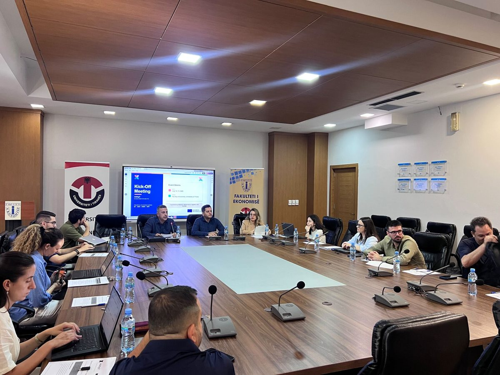

Takimi Kick-Off i AI4DigiT
14–15 Korrik 2026

🚀 AI4DigiT nis zyrtarisht rrugëtimin e tij!
Më 14–15 Korrik 2026, partnerët e AI4DigiT - European Digital Innovation Hub (EDIH) u mblodhën për Takimin Kick-off të projektit, duke shënuar nisjen e një bashkëpunimi për të përshpejtuar transformimin digjital dhe adoptimin e Inteligjencës Artificiale në të gjithë Shqipërinë.
Ky partneritet bashkon akademinë, industrinë dhe institucionet publike për të ndërtuar një ekosistem dinamik inovacioni që u mundëson organizatave të përqafojnë teknologjitë e avancuara dhe të forcojnë konkurrueshmërinë e tyre.
💡 AI4DigiT do të ofrojë shërbime për ndërmarrjet e vogla dhe të mesme (NVM) dhe institucionet publike, përfshirë:
- 🤖 Mbështetje për adoptimin e Inteligjencës Artificiale
- 💻 Shërbime të transformimit digjital
- 🔒 Konsulencë për pajtueshmërinë me GDPR dhe AI Act
- 🎓 Trajnime dhe ngritje kapacitetesh
- 💶 Mbështetje në aksesimin e mundësive të financimit
- 🤝 Networking me ekspertë, ofrues teknologjie, inovatorë dhe partnerë evropianë
Si pjesë e Rrjetit të EDIH-ve, AI4DigiT do të shërbejë si një urë që lidh organizatat shqiptare me ekspertizën evropiane, teknologjitë më të fundit, infrastrukturat digjitale dhe mundësitë e financimit.
Një falënderim i sinqertë për të gjithë partnerët tanë për përkushtimin, bashkëpunimin dhe vizionin e përbashkët.
🌐 Kjo është vetëm fillimi. AI4DigiT është i përkushtuar të ndërtojë një komunitet të fortë inovacioni dhe të mbështesë organizatat shqiptare në krijimin e një të ardhmeje më digjitale, inteligjente dhe konkurruese.
📩 Bashkohu me komunitetin AI4DigiT: info@ai4digit.eu
🇪🇺 Bashkëfinancuar nga Bashkimi Evropian nën Programin Digital Europe.
Shiko postimin në LinkedInAI4DigiT Kick-off Meeting
14–15 July 2026
🚀 AI4DigiT officially begins its journey!
On 14–15 July 2026, the partners of AI4DigiT - European Digital Innovation Hub (EDIH) came together for the project's Kick-off Meeting, marking the start of a collaboration to accelerate digital transformation and the adoption of Artificial Intelligence across Albania.
This partnership brings together academia, industry, and public institutions to build a dynamic innovation ecosystem that empowers organizations to embrace advanced technologies and strengthen their competitiveness.
💡 AI4DigiT will provide services to small and medium-sized enterprises (SMEs) and public institutions, including:
- 🤖 Support for Artificial Intelligence adoption
- 💻 Digital transformation services
- 🔒 Consultancy on GDPR and AI Act compliance
- 🎓 Training and capacity building
- 💶 Support in accessing funding opportunities
- 🤝 Networking with experts, technology providers, innovators, and European partners
As part of the EDIHs Network, AI4DigiT will serve as a bridge connecting Albanian organizations with European expertise, cutting-edge technologies, digital infrastructures, and funding opportunities.
A sincere thank you to all our partners for their commitment, collaboration, and shared vision.
🌐 This is only the beginning. AI4DigiT is committed to building a strong innovation community and supporting Albanian organizations in creating a more digital, intelligent, and competitive future.
📩 Join the AI4DigiT community: info@ai4digit.eu
🇪🇺 Co-funded by the European Union under the Digital Europe Programme.
View the post on LinkedIn